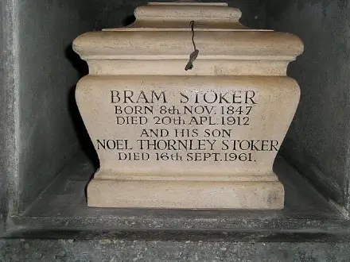

Bram Stoker
Abraham Stoker (8 November 1847 - 20 April 1912) was an Irish author born in Clontarf (near Dublin). An accomplished athlete, journalist, biographer, theatre critic and theatre manager, Stoker is best known today for his Gothic masterpiece Dracula (1897). Stoker is also recognized as one of the most prominent Gothic authors of the Victorian fin-de-siècle. During his lifetime, he was better known as the personal assistant of actor Sir Henry Irving and business manager of the Lyceum Theatre, which Irving owned.
Education at Trinity College
Trinity College
Stoker was educated at Trinity College from 1864 to 1870, "where he won honours in science, mathematics, oratory, history, and composition ("Obituary"). He graduated with a BA (Bachelor's of Arts) in 1870, and pursued his MA (Master's of Arts) in 1875. Though he later in life recalled graduating "with honours in mathematics", this appears to have been a mistake. He was named University Athlete, participating in multiple sports, including playing rugby for Dublin University. He was auditor of the College Historical Society (the Hist) and president of the University Philosophical Society (he remains the only student in Trinity's history to hold both positions), where his first paper was on Sensationalism in Fiction and Society.
Death
After suffering a number of strokes, Stoker died at No. 26 St George's Square, London on 20 April 1912. Some biographers attribute the cause of death to overwork, others to tertiary syphilis. His death certificate named the cause of death as "Locomotor ataxia 6 months", presumed to be a reference to syphilis. He was cremated, and his ashes were placed in a display urn at Golders Green Crematorium in north London. The ashes of Irving Noel Stoker, the author's son, were added to his father's urn following his death in 1961. The original plan had been to keep his parents' ashes together, but after Florence Stoker's death, her ashes were scattered at the Gardens of Rest.
Urn which contains Stoker's ashes in Golders Green Crematorium
Commemorations
Commemorative Plate
On 8 November 2012, Stoker was honoured with a Google Doodle on Google's homepage commemorating the 165th anniversary of his birth. An annual festival takes place in Dublin, the birthplace of Bram Stoker, in honour of his literary achievements. The 2014 Bram Stoker Festival encompassed literary, film, family, street, and outdoor events, and ran from October 24 to 27 in Dublin. The festival is supported by the Bram Stoker Estate and funded by Dublin City Council and Fáilte Ireland.
Bram Stoker Festival